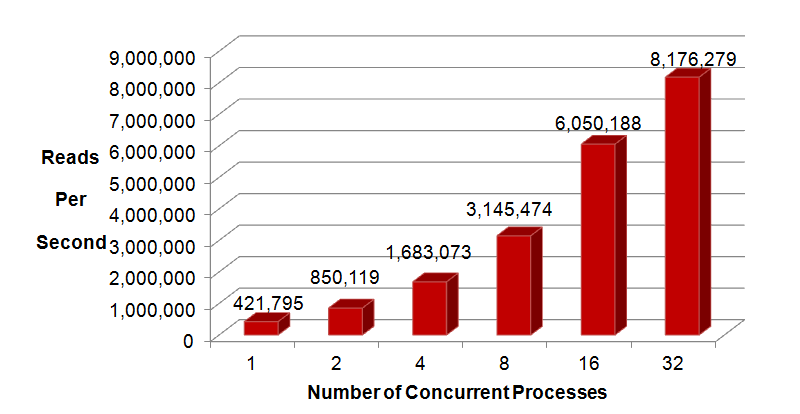

| 100% Read Throughput Results Chart |
|
TimesTen throughput on 100% reads using tptbm, which is available in your TimesTen installation. Each tptbm application process executes the SELECT from the hash index table as fast as it can. The table has 1 million rows of data. Test system spec shown below. |
|
Oracle TimesTen In-Memory Database 11.2.2, Intel Xeon E5-2680 2.7 Ghz, 2 CPUs, 8 Cores/CPU on Oracle Linux 5.6 Application: tptbm implemented in C using ODBC direct-linked connection |
|  |
| Running Tptbm on Your Own System |
| If you are interested in running tptbm on your own TimesTen installation, click here for instructions to run tptbm. |